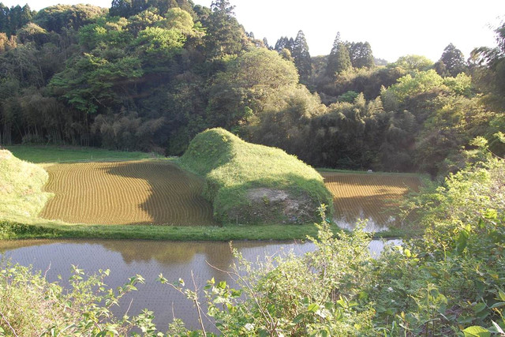
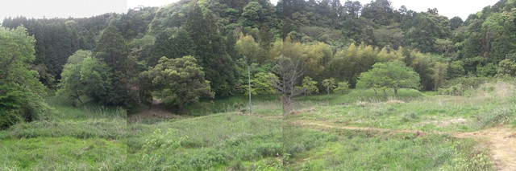
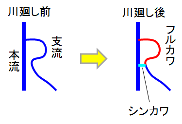
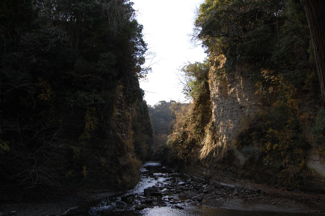
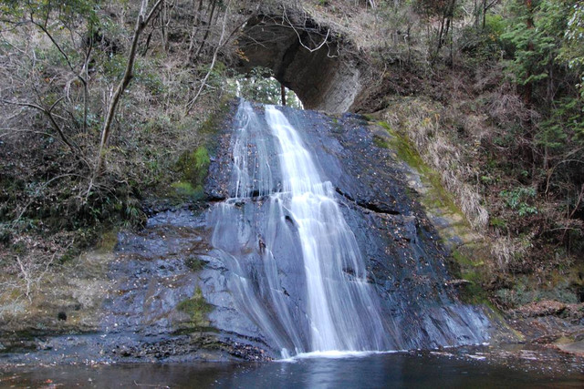

「川廻し」とは房総丘陵の河川に見られる独特の地形である。
かつて蛇行していた川が短絡されて、もとの川の跡（フルカワと呼ばれる）が水田になっている（今は休耕が多い）。
新しい川はシンカワと呼ばれる。
短絡はトンネルや切り通しで人工的に行われた。
時代性のある現象で、江戸時代に始まり、明治には大体終了した。
明治時代以降になると、林業用の用地を得るため、あるいは、交通用のなどの理由での川廻しも行われた。
詳しくはこちらのサイトに掲載されている。
１つの蛇行（曲流）した川の流路の近接部分を直線状のシンカワで短絡した川廻しで、一番ありふれた形である。
|
蛇行部分（細い矢印）に対して、切り通し（太い矢印）掘り短絡している。 フルカワ（赤い部分）は川より高く埋め立てられて、新田が作られている。 フルカワに囲まれた島状の部分はナカジマと呼ばれる。 |
 |
２つの蛇行（曲流）した川の流路を１ヶ所のシンカワで短絡した川廻しで、地形が都合よくないとできないので事例は多くない。
|
Ｍ型の蛇行部分（細い矢印）の両端を、切り通し（水色の部分）で短絡している。 この場合は、さらに上流も川廻しが行われており、連続型と呼ばれる。 地図に示す勝浦市花里の例では、逆さのＭ型になっている。 |
 |
本流に支流が合流する地点付近で両者の蛇行の発達により本流と支流の流路が近接することがある。
その近接地点で支流をシンカワで短絡し、以前の支流の谷をフルカワ新田とする型の川廻しがあり、本流と支流の平面形がＲ字に似ているので名づけられた。
|
 もともとＢ点で、本流（養老川）に合流していた支流（夕木川）をＢ点の手前の近接地点でシンカワ（水色の部分）を作って合流させる川廻し。 地図に示す弘文洞の例では、左右反転したＲ型になっている。 |
 |
A点から本流越しにシンカワを眺めた写真。今は切り通しになっているが本来は川のトンネルであった。
1979年（昭和54年）5月24日の未明に突如上部が崩落し、現在の姿となった。
画面手前を左手から右手に本流の養老川が流れている。
大多喜町観光協会のホームページに崩落前の写真が掲載されている。
明治時代以降になると、林業用の用地を得るため、あるいは、交通用のなどの理由で、川廻しが行われるようにもなった。
蛇行部分（細い矢印）に対して、トンネル（水色の部分）を掘り短絡している。トンネルの出口は滝になっている。 赤い部分がフルカワ、トンネルと滝がシンカワである。 |
 |